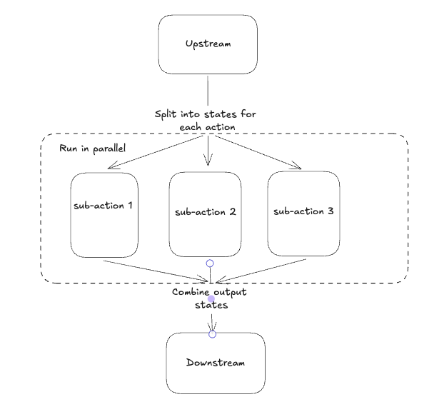

Parallelism¶
Burr can run multiple actions in parallel. Each parallel branch can contain one or more actions, and different branches can have different actions. This is useful when:
Trying different prompts with an LLM
Trying a prompt with different LLMs
Trying multiple prompts with multiple LLMs
Running multiple tools in parallel then combining/selecting from the result
Do semantic search and web search simultaneously for information retrieval
And more! Just like Burr in general, these concepts are generic and can be applied to non-LLM applications This section shows how to enable parallelism and presents use cases.
TL;DR¶
Burr provides a high-level and a low-level API for parallelism. The high-level API supports many different patterns and should be sufficient for most use cases.
MapStates: Apply an action to multiple values in state then reduce the action results (e.g., different prompts to the same LLM).MapActions: Apply different actions to the same state value then reduce the actions result (e.g., same prompt to different LLMs).MapActionsAndStates: Do the full cartesian product of actions and state values (e.g., try different prompts with multiple LLMs)RunnableGraph: Combined with the above options, you can replace a single Action by a Graph composed of multiple actions.
With the low-level API, you can manually determine how parallel actions or subgraphs are executed.
Overview¶
Burr allows you to define parallel actions by expanding a single action into multiple individual actions or subgraphs which will execute them all and joining the results. This is a simple map-reduce pattern.
Currently, Burr has two separate APIs for building parallel applications – higher level (use this first), and lower level. Beyond that, Burr can support parallelism however you wish to run it – see the advanced use-cases section for more details.
Higher-level API¶
You select a set of “configurations” over which you want to run, and Burr launches all of them then joins the result.
This means you either:
Vary the state and run over the same action/subgraph (think tuning LLM parameters/inputs, running simple experiments/optimization routines, etc…)
Vary the action and provide the same state (think running multiple LLMs on the same input, running multiple analyses on the same data, etc…)
Note we do not distinguish between subgraph and action – under the hood it’s all treated as a “sub-application” (more on that later).
Run the same action over different states¶
For case (1) (mapping states over the same action) you implement the MapStates class, doing the following:
We define a regular action
query_llm()using the@actiondecorator.- We also create a subclass of
MapStatesnamedTestMultiplePrompts, which must implement.reads(),.writes(),.action(),.states(), and.reduce(). .reads()/.writes()define the state value it can interact with, just like the@actiondecorator.action()leverages thequery_llm()previously defined.states()can read value from State and yields values to pass to the . action(). In this case, it updates the prompt state value that’s read byquery_llm()`. (the example hardcoded a list of prompts for simplicity, but this would be read from state).reduce()receives multiple states, one per.action()call, where the llm_output value is set byquery_llm()in.action(). Then, it must set all_llm_output as specified in theMapStates.writes()method.
- We also create a subclass of
We pass an instance of the
TestMultiplePromptsclass to the ApplicationBuilder, which will run the action over the states we provide.
This looks as follows – in this case we’re running the same LLM over different prompts:
from burr.core import action, state
from burr.core.parallelism import MapStates, RunnableGraph
from typing import Callable, Generator, List
@action(reads=["prompt"], writes=["llm_output"])
def query_llm(state: State) -> State:
return state.update(llm_output=_query_my_llm(prompt=state["prompt"]))
class TestMultiplePrompts(MapStates):
def action(self, state: State, inputs: Dict[str, Any]) -> Action | Callable | RunnableGraph:
# make sure to add a name to the action
# This is not necessary for subgraphs, as actions will already have names
return query_llm.with_name("query_llm")
def states(self, state: State, context: ApplicationContext, inputs: Dict[str, Any]) -> Generator[State, None, None]:
# You could easily have a list_prompts upstream action that writes to "prompts" in state
# And loop through those
# This hardcodes for simplicity
for prompt in [
"What is the meaning of life?",
"What is the airspeed velocity of an unladen swallow?",
"What is the best way to cook a steak?",
]:
yield state.update(prompt=prompt)
def reduce(self, state: State, states: Generator[State, None, None]) -> State:
all_llm_outputs = []
for sub_state in states:
all_llm_outputs.append(sub_state["llm_output"])
return state.update(all_llm_outputs=all_llm_outputs)
@property
def reads(self) -> List[str]:
return ["prompts"]
@property
def writes(self) -> List[str]:
return ["all_llm_outputs"]
Then, to run the application:
app = (
ApplicationBuilder()
.with_action(
prompt_generator=generate_prompts, # not defined above, this writes to prompts
multi_prompt_test=TestMultiplePrompts(),
).with_transitions(
("prompt_generator", "multi_prompt_test"),
)
.build()
)
Run different actions over the same state¶
For case (2) (mapping actions over the same state) you implement the MapActions class, doing the following:
We define a regular action
query_llm()using the@actiondecorator. This takes in a model parameter (which we’re going to bind later)- We also create a subclass of
MapActionsnamedTestMultipleModels, which must implement.reads(),.writes(),.actions(),.state(), and.reduce(). .reads()/.writes()define the state value it can interact with, just like the@actiondecorator.actions()leverages thequery_llm()previously defined, binding with the different models we want to test.state()can read value from State and produces the state to pass to the actions produced byactions(). In this case, it updates the prompt state value that’s read byquery_llm()..reduce()receives multiple states, one per result of the.actions()call, where the llm_output value is set byquery_llm()in.actions(). Then, it must set all_llm_output as specified in theMapStates.writes()method.
- We also create a subclass of
We pass an instance of the
TestMultipleModelsclass to theApplicationBuilder, which will run the action over the states we provide.
from burr.core import action, state
from burr.core.parallelism import MapActions, RunnableGraph
from typing import Callable, Generator, List, Dict, Any
@action(reads=["prompt", "model"], writes=["llm_output"])
def query_llm(state: State, model: str) -> State:
# TODO -- implement _query_my_llm to call litellm or something
return state.update(llm_output=_query_my_llm(prompt=state["prompt"], model=model))
class TestMultipleModels(MapActions):
def actions(self, state: State, context: ApplicationContext, inputs: Dict[str, Any]) -> Generator[Action | Callable | RunnableGraph, None, None]:
# Make sure to add a name to the action if you use bind() with a function,
# note that these can be different actions, functions, etc...
# in this case we're using `.bind()` to create multiple actions, but we can use some mix of
# subgraphs, functions, action objects, etc...
for action in [
query_llm.bind(model="gpt-4").with_name("gpt_4_answer"),
query_llm.bind(model="o1").with_name("o1_answer"),
query_llm.bind(model="claude").with_name("claude_answer"),
]
yield action
def state(self, state: State, inputs: Dict[str, Any]) -> State:
return state.update(prompt="What is the meaning of life?")
def reduce(self, state: State, states: Generator[State, None, None]) -> State:
all_llm_outputs = []
for sub_state in states:
all_llm_outputs.append(sub_state["llm_output"])
return state.update(all_llm_outputs=all_llm_outputs)
@property
def reads(self) -> List[str]:
return ["prompt"] # we're just running this on a single prompt, for multiple actions
@property
def writes(self) -> List[str]:
return ["all_llm_outputs"]
Then, it’s almost identical to the MapStates case:
app = (
ApplicationBuilder()
.with_action(
prompt_generator=generate_prompts, # not defined above, this writes to prompts
multi_prompt_test=TestMultipleModels(),
).with_transitions(
("prompt_generator", "multi_prompt_test"),
)
.build()
)
Full cartesian product¶
If you want to run all possible combinations of actions/states, you can use the MapActionsAndStates class – this is actually the
base class for the above two classes. For this, you provide a generator of actions and a generator of states, and Burr will run all possible
combinations.
For tracking which states/actions belong to which actions, we recommend you use the values stored in the state (see example).
from burr.core import action, state
from burr.core.parallelism import MapActionsAndStates, RunnableGraph
from typing import Callable, Generator, List
@action(reads=["prompt", "model"], writes=["llm_output"])
def query_llm(state: State, model: str) -> State:
# TODO -- implement _query_my_llm to call litellm or something
return state.update(llm_output=_query_my_llm(prompt=state["prompt"], model=model))
class TestModelsOverPrompts(MapActionsAndStates):
def actions(self, state: State, context: ApplicationContext, inputs: Dict[str, Any]) -> Generator[Action | Callable | RunnableGraph, None, None]:
# make sure to add a name to the action
# This is not necessary for subgraphs, as actions will already have names
for action in [
query_llm.bind(model="gpt-4").with_name("gpt_4_answer"),
query_llm.bind(model="o1").with_name("o1_answer"),
query_llm.bind(model="claude").with_name("claude_answer"),
]
yield action
def states(self, state: State, context: ApplicationContext, inputs: Dict[str, Any]) -> Generator[State, None, None]:
for prompt in [
"What is the meaning of life?",
"What is the airspeed velocity of an unladen swallow?",
"What is the best way to cook a steak?",
]:
yield state.update(prompt=prompt)
def reduce(self, state: State, states: Generator[State, None, None]) -> State:
all_llm_outputs = []
for sub_state in states:
all_llm_outputs.append(
{
"output" : sub_state["llm_output"],
"model" : sub_state["model"],
"prompt" : sub_state["prompt"],
}
)
return state.update(all_llm_outputs=all_llm_outputs)
@property
def reads(self) -> List[str]:
return ["prompts"]
@property
def writes(self) -> List[str]:
return ["all_llm_outputs"]
Subgraphs¶
While we’ve been using individual actions above, we can also replace them with subgraphs (E.G. using recursion inside applications).
To do this, we use the Graph API and wrap it in a RunnableGraph:
The
GraphAPI allows us to tell the structure of the action- The
RunnableGraphis a wrapper that tells the framework other things you need to know to run the graph: The entrypoint of the graph
The exit points (corresponding to
halt_afterinrun)
- The
This might look as follows – say we have a simple subflow that takes in a raw prompt from state and returns the LLM output:
from typing import Dict, Any
from burr.core import action, state
from burr.core.graph import Graph
from burr.core.parallelism import RunnableGraph
@action(reads=["prompt"], writes=["processed_prompt"])
def process_prompt(state: State) -> State:
processed_prompt = f"The user has asked: {state['prompt']}. Please respond directly to that prompt, but only in riddles."
return state.update(
processed_prompt=state["prompt"],
)
@action(reads=["processed_prompt"], writes=["llm_output"])
def query_llm(state: State) -> State:
return state.update(llm_output=_query_my_llm(prompt=state["processed_prompt"]))
graph = (
GraphBuilder()
.with_action(
process_prompt=process_prompt,
query_llm=query
).with_transitions(
("process_prompt", "query_llm")
).build()
)
runnable_graph = RunnableGraph(
graph=graph,
entrypoint="process_prompt",
halt_after=["query_llm"]
)
class TestMultiplePromptsWithSubgraph(MapStates):
def action(self, state: State, inputs: Dict[str, Any]) -> Action | Callable | RunnableGraph:
return runnable_graph
def states(self, state: State, context: ApplicationContext, inputs: Dict[str, Any]) -> Generator[State, None, None]:
for prompt in [
"What is the meaning of life?",
"What is the airspeed velocity of an unladen swallow?",
"What is the best way to cook a steak?",
]:
yield state.update(prompt=prompt)
... # same as above
In the code above, we’re effectively treating the graph like an action – due to the single entrypoint/halt_after condition we specified,
it can run just as the single prompt we did above. Note this is also doable for running multiple actions over the same state.
Passing inputs¶
Parallel actions can accept inputs in the same way that class-based actions do. In order to accept inputs you have to declare them in the class. As we’re using the class-based API,
this is done by declaring the inputs property – a list of strings that are used in inputs. Note you have to use the superclasses
inputs as well to ensure it has everything it needs – we will likely be automating this.
This looks as follows:
from burr.core import action, State, ApplicationContext
from burr.core.graph import Graph
@action(reads=["prompt"], writes=["processed_prompt"])
def process_prompt(state: State) -> State:
processed_prompt = f"The user has asked: {state['prompt']}. Please respond directly to that prompt, but only in riddles."
return state.update(
prompt=state["prompt"],
)
@action(reads=["processed_prompt"], writes=["llm_output"])
def query_llm(state: State, model: str) -> State:
return state.update(llm_output=_query_my_llm(prompt=state["processed_prompt"], model=model))
graph = (
GraphBuilder()
.with_action(
process_prompt=process_prompt,
query_llm=query
).with_transitions(
("process_prompt", "query_llm")
).build()
)
runnable_graph = RunnableGraph(
graph=graph,
entrypoint="process_prompt",
halt_after="query_llm"
)
class TestMultiplePromptsWithSubgraph(MapStates):
def action(self, state: State, inputs: Dict[str, Any]) -> Action | Callable | RunnableGraph:
return runnable_graph
@property
def inputs(self) -> List[str]:
return ["prompts"] + super().inputs # make sure to include the superclass inputs
def states(self, state: State, context: ApplicationContext, inputs: Dict[str, Any]) -> Generator[Tuple[State, dict], None, None]:
for prompt in inputs["prompts"]:
yield state.update(prompt=prompt)
... # same as above
Note
Should MapOverInputs be its own class? Or should we have bind_from_state(prompt="prompt_field_in_state") that allows you to pass it in as
state and just use the mapping capabilities? Or are we happy as it currently is because we can pass in inputs through MapStates/MapActions (as shown above).
Lower-level API¶
The above compile into a set of “tasks” – sub-applications to run. If, however, you want to have more control, you can use the lower-level API to simply define the tasks. This allows you to provide any combination of actions, input, and state to the tasks.
All of the aforementioned high-level API are implemented as subclasses of TaskBasedParallelAction.
You can subclass it directly and implement the .tasks() method that yields SubGraphTask,
which can be actions or subgraphs. These tasks are then executed by the burr.Executor implementations
This looks as follows:
from burr.core import action, state, ApplicationContext
from burr.core.parallelism import MapStates, RunnableGraph
from typing import Callable, Generator, List
@action(reads=["prompt", "model"], writes=["llm_output"])
def query_llm(state: State, model: str) -> State:
# TODO -- implement _query_my_llm to call litellm or something
return state.update(llm_output=_query_my_llm(prompt=state["prompt"], model=model))
class MultipleTaskExample(TaskBasedParallelAction):
def tasks(state: State, context: ApplicationContext) -> Generator[SubGraphTask, None, None]:
for prompt in state["prompts"]:
for action in [
query_llm.bind(model="gpt-4").with_name("gpt_4_answer"),
query_llm.bind(model="o1").with_name("o1_answer"),
query_llm.bind(model="claude").with_name("claude_answer"),
]
yield SubGraphTask(
action=action, # can be a RunnableGraph as well
state=state.update(prompt=prompt),
inputs={},
# stable hash -- up to you to ensure uniqueness
application_id=hashlib.sha256(context.application_id + action.name + prompt).hexdigest(),
# a few other parameters we might add -- see advanced usage -- failure conditions, etc...
)
def reduce(self, state: State, states: Generator[State, None, None]) -> State:
all_llm_outputs = []
for sub_state in states:
all_llm_outputs.append(
{
"output" : sub_state["llm_output"],
"model" : sub_state["model"],
"prompt" : sub_state["prompt"],
}
)
return state.update(all_llm_outputs=all_llm_outputs)
Advanced Usage¶
We anticipate the above should cover most of what you want to do, but we have a host of advanced tuning capabilities.
Execution¶
To enable execution, you need to pass a burr.Executor to the application, or to the actions themselves. This is just a python executor
instance, although we will likely be adding a new interface.
You can implement your own by subclassing the concurrent.futures.Executor class and passing to your favorite execution tool.
This only makes sense for synchronous execution – for async, it will use asyncio.gather. You can pass this either as a global executor for the application, or specify it as part of your class:
Specifying it as part of the application – will get routed as the default to all parallel actions:
app = (
ApplicationBuilder()
.with_parallel_executor(MultiThreadedExecutor(max_concurrency=10))
.build()
)
Specifying it as part of the action – will override the global executor (note this is not supported yet…).
class TestMultiplePrompts(MapStates):
def action(self, state: State, inputs: Dict[str, Any]) -> Action | Callable | RunnableGraph:
return runnable_graph
def executor(self) -> Executor:
return MultiThreadedExecutor(max_concurrency=10)
... # same as above
Persistence/Tracking¶
By default, the trackers/persisters will be passed from the parent application to the child application. The application IDs will be created as a a stable hash of the parent ID + the index of the child ID, requiring the order to be constant to ensure that the same application ID is used for the same task every time.
Note that we will be adding hte ability to create a unique key, per application, but that is not implemented yet.
It will also utilize the same persister to load from the prior state, if that is used on the application level (see state persistence).
This enables the following:
Tracking will automatically be associated with the same application (and sub-application) when reloaded
If the concurrent application quits halfway through, the application will be able to pick up where it left off, as will all sub-applications
The default behavior is to cascade all the following constructs through to the parallel child applications:
Tracking (given by the
burr.core.application.ApplicationBuilder.with_tracker()function inApplicationBuilder)State saving/persistence (given by the
burr.core.application.ApplicationBuilder.with_state_persister()function inburr.core.application.ApplicationBuilder)State loading (given by the
burr.core.application.ApplicationBuilder.initialize_from()function inburr.core.application.ApplicationBuilder)
These will then be passed ot the corresponding sub-application tasks. If any of these objects implement a .copy() method, that will be called. Otherwise the same instance will be created. Not the tracker/persister/loader must be serializable to work in non-multithreaded executors, and thread-safe to work in multithreaded instances.
In mst cases, (2) and (3) above will be the same, however there all valid use-cases where you might want to use different persisters/loaders for the sub-application. Thus, the default will be to pass the same instance for (2) and (3), if they both exist and are specified.
You can disable either tracking or persistence at the sub-application level by overriding one of the three methods (corresponding to the three adapter-types above),
on any of the burr.core.parallelism.MapStatesAndActions, burr.core.parallelism.MapStates, or burr.core.parallelism.MapActions classes.
If you return None, then no tracker/persister will be used. If you return an object (E.G. a tracker or a persister), that will be used instead. The function will be called for every instance of the sub-application.
Overriding the tracker
burr.core.parallelism.MapStatesAndAction.tracker()Overriding the persister
burr.core.parallelism.MapStatesAndAction.state_persister()Overriding the loader
burr.core.parallelism.MapStatesAndAction.state_initializer()
You can also set the corresponding fields in the burr.core.parallelism.SubGraphTask object on a per-task basis,
if you are using the lower-level API.
You can also disable it globally using the application builder:
class TestMultiplePrompts(MapStates):
def action(self, state: State, inputs: Dict[str, Any]) -> Action | Callable | RunnableGraph:
return runnable_graph
def tracker(self, context) -> TrackingBehavior | None:
# return "cascade" # default
# return None # no tracking
return LocalTrackingClient(...) # custom tracker
def state_persister(self) -> Persister | None:
# return "cascade" # default
# return None # no persistence
return SQLLitePersister(...) # custom persister
def state_initializer(self) -> StateInitializer | None:
return self.state_perssiter() # same as the persister
... # same as above
Other¶
Things we will consider after the initial release:
Customizing execution on a per-action basis – likely a parameter to
RunnableGraphCustomizing tracking keys for parallelism
Streaming – interleaving parallel streaming actions and giving results as they come
More examples for inter-graph communication/cancellation of one action based on the result of another
Graceful failure of sub-actions
Under the hood¶
Beneath the APIs, all this does is simplify the recursion: API to allow for multiple actions to be run in parallel.
RunnableGraphs are set as subgraphs, and recursively executed by the application, using the executoran
Actionare turned into aRunnableGraphby the framework, and executed by the executor
In the UI, this will show up as a “child” application – see the recursion: section for more details.
Additional Use-cases¶
As this is all just syntactic sugar for recursion, you can use the recursion to get more advanced capabilities.
This involves instantiating a sub-application inside the action, and running it yourself.
Interleaving Generators¶
Say you want to provide an agent that provides up-to-date progress on it’s thoughts. For example, say you want to providea a planning agent with a similar interface to OpenAI’s o1 model.
To do this, you would typically call to iterate. Now, say you wanted to run
multiple in parallel!
While this is not built to be easy with the APIs in this section, it’s very doable with the underlying recursion API.
The basics (code not present now):
Create each sub-application using the
with_parent_contextmethodRun each sub-application in parallel using the executor
Combine the generators in parallel, yielding results as they come out
Inter-action communication¶
Say you have two LLMs answering the same question – one that gives immediate results back to the user as they come in, and another that thinks for a while to give more sophisticated results. The user then has the option to say they’re happy with the solution, or they want to wait for more. You may want to eagerly kick off the second LLM if you’re concerned about latency – thus if the user wants more or does not respond, the more sophisticated LLM might come up with a solution.
To do this, you would:
Run the sub-graph consisting of the first LLM using
iterateSimultaneously run the second LLM using
iterateas wellJoin them in parallel, waiting for any user-input if provided
Decide after every step of the first graph whether you want to cancel the second graph or not – E.G. is the user satisfied.
Notes¶
This is in an experimental release phase. While we anticipate the API to be stable, we reserve the right to make slight changes (and will obviously add new features).
Things that may change:
We will likely alter the executor API to be more flexible, although we will probably allow for use of the current executor API
We will be adding guard-rails for generator-types (sync versus async)
The UI is a WIP – we have more sophisticated capabilities but are still polishing them
Support for action-level executors